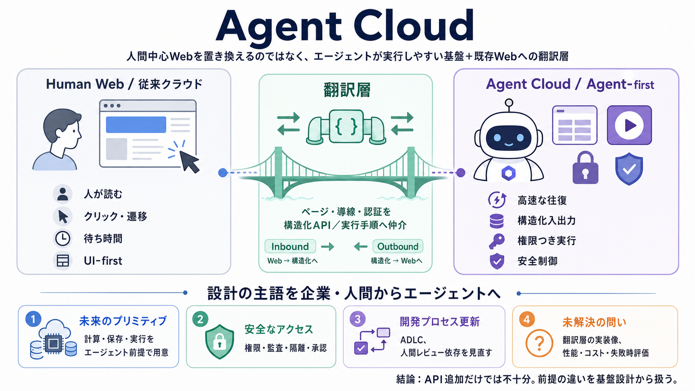

ADLC vs SDLC: Agent Development Lifecycle Explained [2026]
SDLC governs code behavior; ADLC governs agent behavior. These are different classes of engineering artifacts with diffe…

SDLC governs code behavior; ADLC governs agent behavior. These are different classes of engineering artifacts with diffe…
The gap between what agents generate and what teams can confidently verify determines how much of that velocity becomes …
Agentic capabilities are most powerful when they operate as a coordinated system. In the SDLC, specialized agents may ha…
| Rearchitecting the Workflows control plane for the agentic era | Cloudflare Workflows, a durable execution engine for …
An application is agent-native when the human interface and the agent are two ways of operating the same product. You ma…